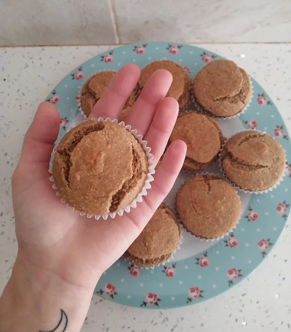

Muffins de Banana e Aveia no Liquidificador
Tempo de preparação
10min
Horas de Cozimento
25min
Tempo Total
35min
Porções
10

Ingredientes
- 150ml de leite de amêndoa
- 1 csp de vinagre de sidra
- 64g de manteiga de amendoim
- 50g de açúcar mascavado
- 2 bananas médias maduras
- 2 cchá de essência de baunilha
- 1 cchá de canela em pó
- 200g de flocos de aveia
- 2 cchá de fermento
- ¼ cchá de sal
Instruções
- Pré aqueça o forno a 210ºC.
- Numa liquidificadora adicione primeiro os ingredientes húmidos: leite de amêndoa, vinagre de sidra, manteiga de amendoim, açúcar mascavado, 2 bananas maduras, essência de baunilha e canela em pó.
- Ligue o liquidificador e pare uma ou duas vezes para que, com uma espátula, ajude a empurrar para baixo, alguma massa que fique perdida nas laterais. Misture novamente.
- Por fim, adicione os ingredientes secos: flocos de aveia, fermento e sal. Volte a ligar o liquidificador, pare se necessário para limpar as laterais e quando tiver uma massa espessa está pronta a enformar.
- Divida a massa em 10 formas de muffin com forma de papel por dentro. Asse por cerca de 5 minutos e depois abaixe a temperatura para 180ªC deixando os queques por mais 20 minutos ou até que estejam cozidos por completo.
- Retire os muffins do forno e deixe arrefecer durante 5 minutos, depois com cuidado retire-os das formas e coloque num prato/tabuleiro bonito.